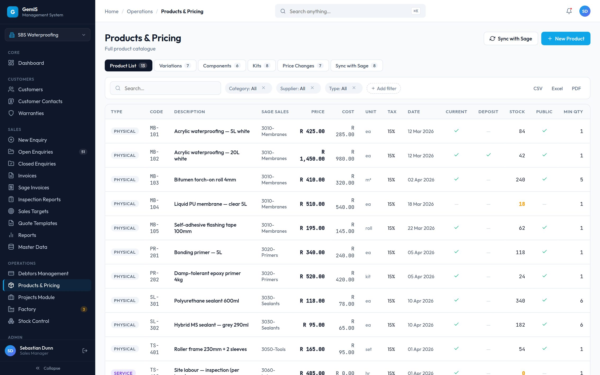
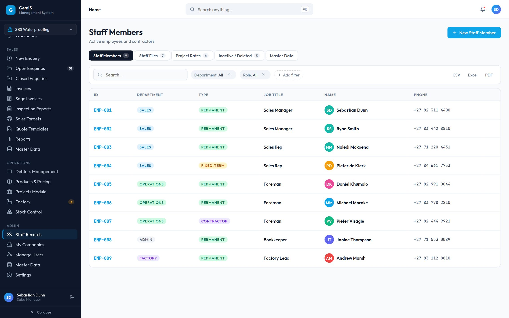

Designing an ERP that onboards itself
Turning a complex enterprise ERP into a system that helps businesses get operational faster — while making AI-assisted onboarding understandable and trustworthy.


The problem wasn’t the ERP.
GEM Information Systems builds ManaGem, a management platform for trade businesses — companies that run one continuous money chain from customer to payment. The platform itself was capable. The problem was everything that had to happen before a client could use it.
Every new client meant weeks of manual work: customer ledgers in one format, price lists in another, staff registers in a third — all interpreted, re-typed and verified by hand before the client could log in and see their own business reflected back at them.
In enterprise software, a bad runway is a hidden top-of-funnel leak.
Deals stall, momentum dies, and the champion inside the client’s business loses the political capital that got the project approved. So the brief became two products designed as one system: ManaGem, the core platform, and Take-On, an AI-assisted onboarding product that gets a client from signed contract to working system — without a single manual data-entry session.
The old runway: weeks of manual work standing between a signed contract and a usable system.
From contract to trusted data.
Take-On reads the client’s existing documents, extracts the records ManaGem needs, and routes every one of them through human review — so the system starts life with data people already trust.


Operational clarity
Dashboards and modules organised around how the business actually runs — enquiries, production, stock, invoices — not around database tables.
Guided workflows
Onboarding is a sequenced, step-by-step journey with progress that is always visible — never a blank import screen and a manual.
Reviewable AI
AI does the heavy lifting; people keep the final say. Every extracted record can be inspected, corrected and confirmed before it goes live.
Designing around the business, not the database.
A trade business earns revenue through one chain. ManaGem treats that chain as one coordinated object — which means onboarding can’t be half-done: the system only pays for itself once the whole chain is populated and trustworthy.
If customers land in the system but products don’t, sales can’t quote. If staff records are missing, jobs can’t be assigned. That made onboarding a product in its own right — not a support task bolted onto one.
Designing AI confidence as an attention system
Raw model scores mean nothing to a business owner. So confidence became a set of UX states that direct human attention: records the system is sure about step back; records that need a person step forward.
- 1Every batch opens with a summary — verified, needs review, possible duplicates.
- 2Each record carries one plain-language state. Colour and wording do the work — no percentages.
- 3High-confidence records can be accepted in one action, so attention goes where it’s needed.
- 4“How was this extracted?” is one tap away — the AI explains itself before anyone asks.
Framed as interface states, not production ML metrics — the states describe how the product asks for attention, and they hold regardless of the model behind them.
Deliberate trade-offs, made visible
Two decisions carry the trust model. Both traded speed and spectacle for something this market values more: a process people can inspect and control.
AI shouldn’t ask users to trust it. It should let them verify it.
Every extracted record points back to the document it came from — the exact file, processed in the open, with each step logged and timestamped as it happens.
- Why —The buyer is a larger South African company with its own compliance obligations. Trust is the purchase decision.
- Alternative considered —A black-box import: faster to build, faster to demo.
- Decision —Rejected it. This market will trust a slower, explainable process over a faster, opaque one every time.


Nothing goes live without a person saying yes
Every onboarding runs through two human gates — the client confirms their own data, then the GEMIS team completes a final quality check before anything reaches ManaGem.
- Why —A business owner has to stay in control of their own customer list, prices and staff records.
- Alternative considered —A fully autonomous import — it would demo well and fail the exact trust test this market applies.
- Decision —Two-stage confirmation, designed as permanent product behaviour — not a v1 stopgap to be automated away.

Making an ERP feel less like an ERP
The people using ManaGem spend six-plus hours a day in it. Three deliberate moves take the traditional ERP friction out of that day.
Find anything before you learn everything
- Challenge —Traditional ERPs bury work behind deep navigation trees that demand training before they give value.
- Solution —Every list view leads with search and live pipeline stats, so users type what they want instead of memorising where it lives.

Status you can read at a glance
- Challenge —Legacy systems speak in codes and abbreviations that only veterans can decode.
- Solution —Plain-language status chips with consistent colour meaning across every module — the same green means the same thing everywhere.

Actions live where the work happens
- Challenge —ERP workflows scatter related actions across menus, screens and modes.
- Solution —Row-level and page-level actions sit next to the records they affect, so the next step is always in reach.

One pattern language across two products
Navigation, tables, forms, dashboards and AI states all draw from one design system — scoped to what a small engineering team can build, and built to phase in alongside legacy modules.
 Navigation
Navigation
Tables Forms
Forms DashboardsAI states
DashboardsAI statesHigh-fidelity and partially interactive. Module views run on representative data, and some actions demonstrate the pattern without executing it — nothing here is presented as production software.
Internal and structured: platform walkthroughs and stakeholder review with the product owner, the onboarding team and the director. No external usability testing is claimed.
Approved for implementation, pre-production. The next step is observed sessions with the GEMIS onboarding team working against real client documents.
What changed
Onboarding became a product
Weeks of manual capture were redesigned into a guided, AI-assisted journey with review built into every step — approved as the platform’s next generation.
Trust became a feature
Confidence states, source traceability and two-stage confirmation were designed as permanent product behaviour — not a v1 stopgap to be automated away.
Two products, one system
A shared design system now covers ManaGem and Take-On, scoped for phased implementation alongside legacy modules.
The ERP got simpler to live in
Search-first entry, one plain-language status system and contextual actions now run consistently across every module.
ManaGem is currently pre-production, so production usage metrics are not yet available. The outcomes above describe the approved design direction.
How success will be measured
A measurement framework was agreed as part of the implementation direction. Every metric below is a future measurement — evaluated after rollout, not claimed before it.
Onboarding runway
Elapsed time from signed contract to client review complete.
Reviewer effort
GEMIS reviewer hours per onboarding.
Data quality
Share of extracted records confirmed without edits.
Production visibility
Engagement with factory alerts beyond production roles.
Revenue cycle
Enquiry-to-invoice cycle time against the legacy baseline.
Support burden
Onboarding- and navigation-related support requests.
“Automation is only valuable when people can understand, control and recover from it.”
I started this project treating it as an interface modernisation. I finished it treating it as a trust problem wearing a data-migration costume. The blocker was never extraction accuracy — the models were already good enough. The blocker was whether a business owner would hand their customer list to a system they couldn’t see into.
- Every version that leaned harder on “AI-powered” and softer on “you stay in control” landed worse in internal review.
- Enterprise design is negotiated, not decreed — the constraints shaped better decisions than unconstrained ideation would have.
- Compliance, treated as a designed feature rather than a legal checkbox, turned out to be a genuine asset.
That is why nothing in Take-On goes live without a person saying yes — and why that will never change.
Explore more work
More case studies on designing complex products that make difficult things feel simple.